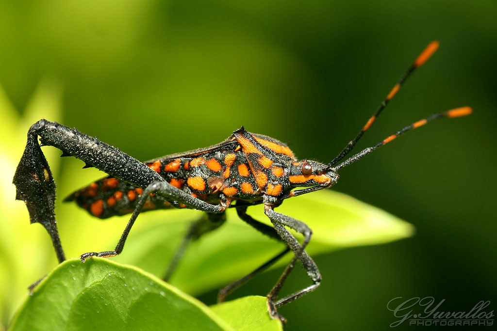

Top 10 Deadliest Animals
10,000 deaths per year
Another insect that spreads disease and death through its bite is the aptly-named assassin bug. Some species of this Central and South American ‘true bug’ are responsible for spreading Chagas disease, another tropical parasitic disease that kills approximately 10,000 people per year globally.
The species that do this are also often called ‘kissing bugs’, as they tend to bite people’s faces as they sleep. Charming.
